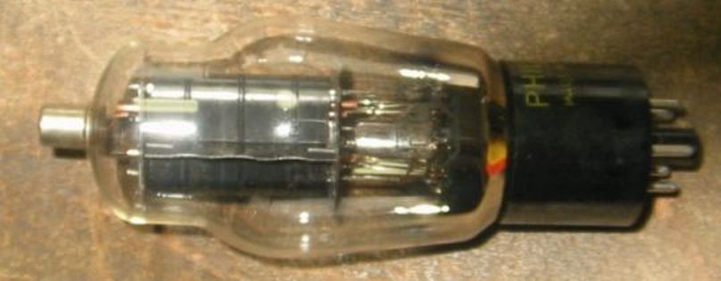
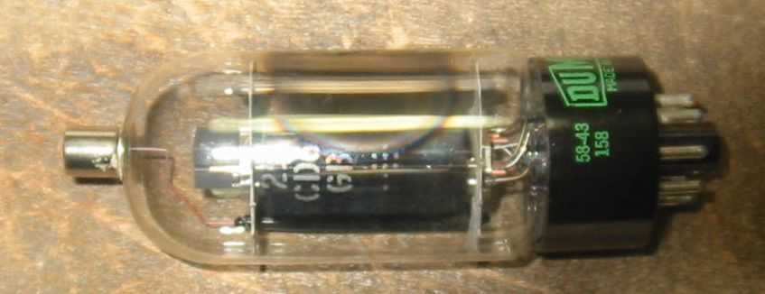
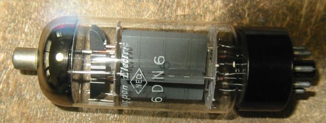
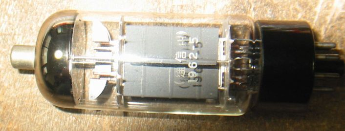

6CD6について
６CD6に初めて出会ったのは、アマチュア無線がまだAM全盛時代だった1960年ころです。
６CB5Aと共に６CD6が入手でき、６CB5Aを送信機ファイナルに、６CD6をB級PPで変調器に使いました。
その６CD6は今でもオーディオで使う人のいるスクリーングリッド・ドライブで、入力トランスでドライブしました。
ちょっと珍しい6CD6G

6CD6GA

別な6CD6GA このプレートはちょっと6CD6には見えません。

25CD6GB

NECの6DN6 通信用 6CD6と互換性があります。


TV水平出力管のページに戻る